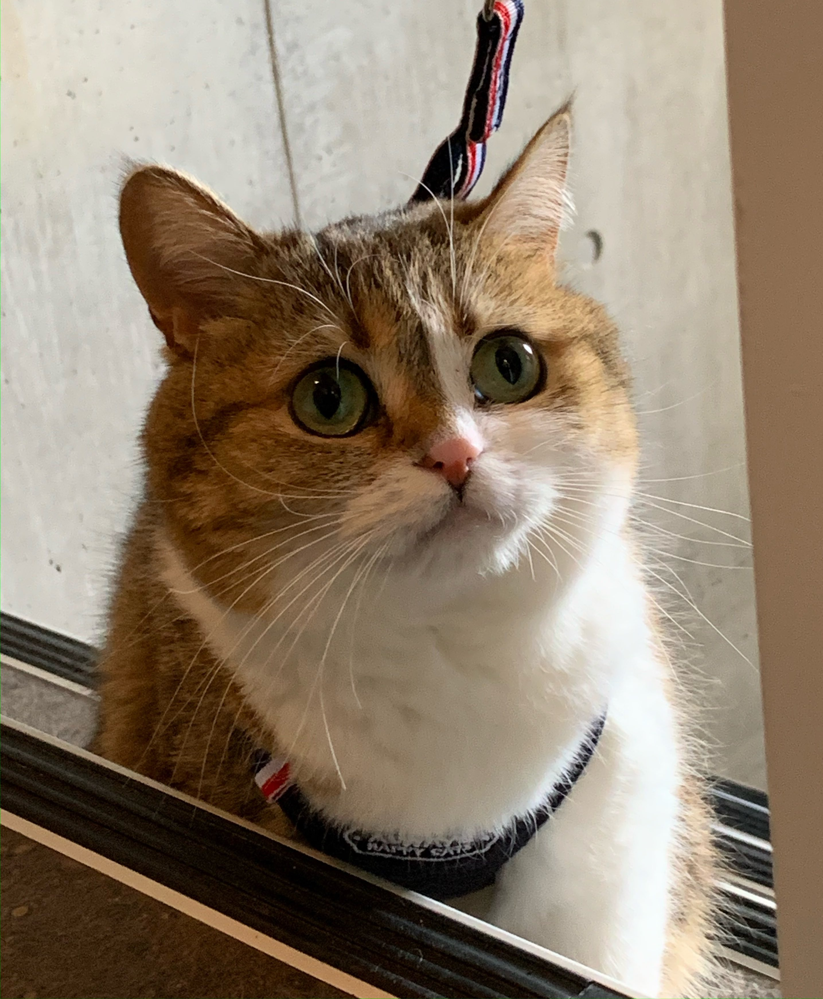
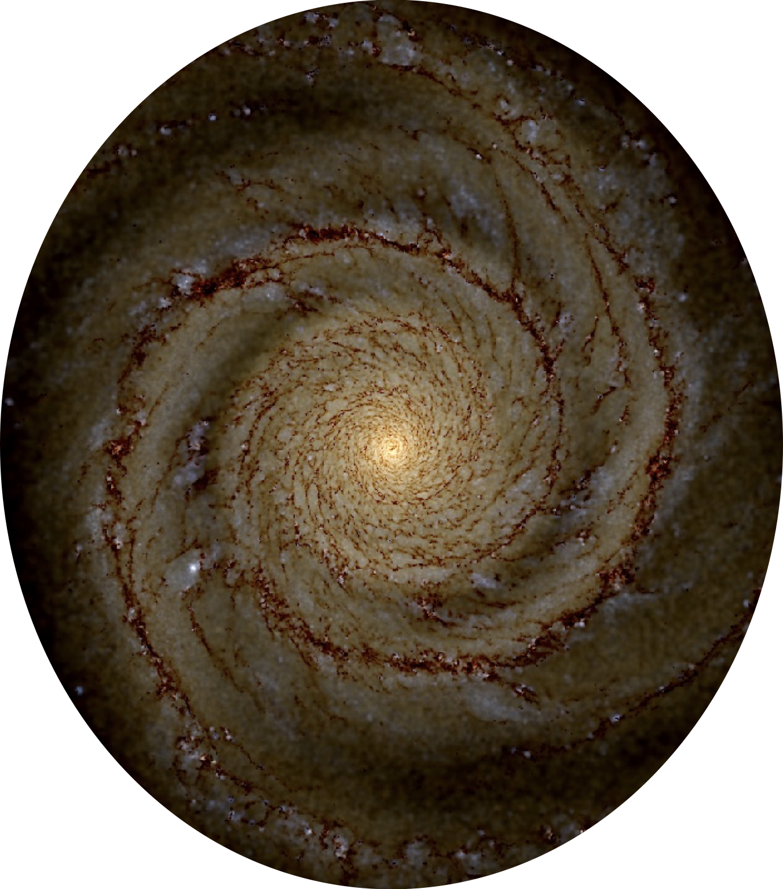

Research interests

My main research interest is the structure of disc galaxies. What makes those grand spiral arms we see in the galaxies in our night sky? Why are some barred and not all? What is the lifetime of such features? Can they be formed in isolation, or is a companion needed to induce some features?
Of special interest to me is the shape of our own galaxy; the Milky Way. Rather embarrassingly, we know less about the shape of the Milky Way than other galaxies because we are stuck inside. This makes building a map of the Milky Way, and thus understanding its structure, a lot more complicated.
To shed some light on these questions I perform numerical simulations to study the gas, stars and dark matter within galaxies. I then compare what I see in my simulations to real observed galaixes to better understand the physics that makes them tick.
About me
 I gained my undergraduate degree at Durham University under the supervision of Vincent Eke on the topic of the existence of water on the lunar surface. I earned my Ph.D. from the University of Exeter where I worked on the problem of building a map of the Milky Way (see these articles). I then worked as a postdoc with Elizabeth Tasker on the topic of tidal encounters between galaxies and small companions. Prior to moving to Sac., I was a made a joint research and teaching faculty member at Hokkaido University in the city of Sapporo (Hokkaido, Japan). My teaching there was tied to the Integrated Science Program.
When not spinning galaxies I enjoy exploring a bit of exploring in the country I've recently come to know as home! I moved here with my now-wife (a Sac state alumn herself) and our Japanese cat Freyja (pictured) in 2021. In my spare time I enjoy of cycling, going to the gym, bouldering, and a bit of ocassional frisbee. Like many astrophysicists I'm a bit of a sci-fi fan, and am yet to really grow out of and video games.
A list of my publications can be found here, and my entry on the ORCID database has some additional information about my research.
News!
- July 2023: I will be attending the American Association of Physics Teachers Summer Meeting.
- June 2023: Our paper on star cluster formation in different spiral/barred environments has been accepted by MNRAS. Read all about Ahmad's paper here.
- May 2023: Our paper on filaments in the Milky Way has been accepted by A&A. Read all about Yifei's paper here.
- April 2023: Towy Yan has been awarded a SURE summer studenship to work with me on galactic spurs over summer!
- April 2023: Presented my work at our D3 event at Sac State, here's the poster I presented.
- March 2023: Our paper on massive star formation in different colliding molecular clouds has been accepted by MNRAS. Read all about Ahmad's paper here.
- March 2023: I have been awarded a Research and Creative Activity award to support my work for the coming two semesters and hire a summer research student, Justin Alejandro, who will be working on raditaive transfer in galaxies.
- Feb 2023: Gave a seminar for CSU Chico.
- Jan 2023: My PhD student, Elizabeth Iles, has passed her viva exam! She'll be moving on to a post-doc at Sydney with Prof. Bland-Hawthorn.
Research students
I currently act as a supervisor to a number of undergrads at Sac State, and have supervised MSc and PhD students in the past. If you would like to come and work on a project with me then have a little look around this website to get a feel for what I do, and then get in touch! I have some specific information about what students have worked on with me here.
Collaborators webpages
An incomplete and unordered list of collaborators from my publications:
James Wadsley, McMaster University, CanadaSam Benincasa, Ohio State University, U.S.A.
Ben Keller, Heidelberg University, Germany.
Elizabeth Tasker, ISAS/JAXA, Japan
Clare Dobbs, University of Exeter, U.K.
David Acreman, University of Exeter, U.K.
Ana Duarte Cabral, Cardiff University, U.K.
Alice Quillen, Rochester University, U.S.A.
Jason Hunt, Flatiron Institute, U.S.A.
Fumi Egusa, University of Tokyo, Japan
Junichi Baba, NAOJ, Japan
Daisuke Kawata, UCL, U.K.
Ana Duarte Cabral, Cardiff University, U.K.
Sarah Ragan, Cardiff University, U.K.
Takashi Okamoto, Hokkaido University, Japan
Daniel Price, Monash University, Australia
Sukanya Chakrabarti, Alabama University, U.S.A.